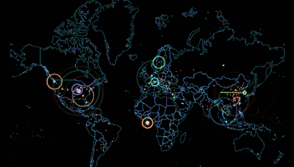

本工具用于控制服务器上的多套开发/运行环境，并且有还一个算能看的UI界面
具体环境的操作请看各环境官方文档，在此不做说明。
工具具有连接功能，通过相应按钮即可实现不同开发环境间的跳转,主要搭载的操作环境为DVWA、YMCMF、WordPress
Dedecms、ECShop、phpcms、Discuz、ThinkPHP.其他更多环境请自己安装
环境只做了默认环境，也就是官方安装包下载到本地后配置的模板，如果需要其他内容请自行修改或收集
看到下面那个炫酷的界面了吗?没别的事,就让你看看.图源：NORSE全球网络攻击实时监控地图
